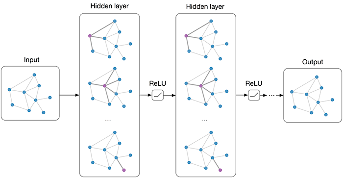
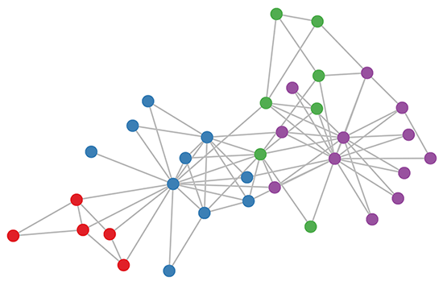
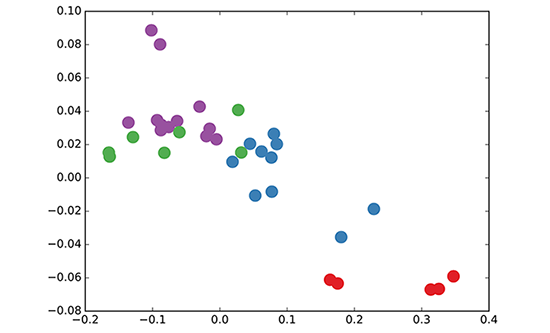

Many important real-world datasets come in the form of graphs or networks: social networks, knowledge graphs, protein-interaction networks, the World Wide Web, etc. (just to name a few). Yet, until recently, very little attention has been devoted to the generalization of neural network models to such structured datasets.
In the last couple of years, a number of papers re-visited this problem of generalizing neural networks to work
on
arbitrarily structured graphs
In this post, I will give a brief overview of recent developments in this field and point out strengths and drawbacks of various approaches. The discussion here will mainly focus on two recent papers:
and a review/discussion post by Ferenc Huszar: How powerful are Graph Convolutions? that discusses some limitations of these kinds of models. I wrote a short comment on Ferenc's review here (at the very end of this post).
If you're already familiar with GCNs and related methods, you might want to jump directly to Embedding the karate club network.
Generalizing well-established neural models like RNNs or CNNs to work on arbitrarily structured graphs is a
challenging problem. Some recent papers introduce problem-specific specialized architectures (e.g.
More recent work focuses on bridging the gap between fast heuristics and the slow
In
Currently, most graph neural network models have a somewhat universal architecture in common. I will refer to
these
models as Graph Convolutional Networks (GCNs); convolutional, because filter parameters are typically
shared
over all locations in the graph (or a subset thereof as in
For these models, the goal is then to learn a function of signals/features on a graph $\mathcal{G}=(\mathcal{V}, \mathcal{E})$ which takes as input:
and produces a node-level output $Z$ (an $N\times F$ feature matrix, where $F$ is the number of output features
per
node). Graph-level outputs can be modeled by introducing some form of pooling operation (see, e.g.
Every neural network layer can then be written as a non-linear function $$ H^{(l+1)} = f(H^{(l)}, A) \, ,$$ with $H^{(0)} = X$ and $H^{(L)} = Z$ (or $z$ for graph-level outputs), $L$ being the number of layers. The specific models then differ only in how $f(\cdot, \cdot)$ is chosen and parameterized.
As an example, let's consider the following very simple form of a layer-wise propagation rule:
$$f(H^{(l)}, A) = \sigma\left( AH^{(l)}W^{(l)}\right) \, ,$$
where $W^{(l)}$ is a weight matrix for the $l$-th neural network layer and $\sigma(\cdot)$ is a non-linear activation function like the $\text{ReLU}$. Despite its simplicity this model is already quite powerful (we'll come to that in a moment).
But first, let us address two limitations of this simple model: multiplication with $A$ means that, for every node, we sum up all the feature vectors of all neighboring nodes but not the node itself (unless there are self-loops in the graph). We can "fix" this by enforcing self-loops in the graph: we simply add the identity matrix to $A$.
The second major limitation is that $A$ is typically not normalized and therefore the multiplication with $A$
will
completely change the scale of the feature vectors (we can understand that by looking at the eigenvalues of $A$).
Normalizing $A$ such that all rows sum to one, i.e. $D^{-1}A$, where $D$ is the diagonal node degree matrix, gets
rid
of this problem. Multiplying with $D^{-1}A$ now corresponds to taking the average of neighboring node features. In
practice, dynamics get more interesting when we use a symmetric normalization, i.e.
$D^{-\frac{1}{2}}AD^{-\frac{1}{2}}$ (as this no longer amounts to mere averaging of neighboring nodes). Combining
these two tricks, we essentially arrive at the propagation rule introduced in
$$f(H^{(l)}, A) = \sigma\left( \hat{D}^{-\frac{1}{2}}\hat{A}\hat{D}^{-\frac{1}{2}}H^{(l)}W^{(l)}\right) \, ,$$
with $\hat{A} = A + I$, where $I$ is the identity matrix and $\hat{D}$ is the diagonal node degree matrix of $\hat{A}$.
In the next section, we will take a closer look at how this type of model operates on a very simple example graph: Zachary's karate club network (make sure to check out the Wikipedia article!).

Let's take a look at how our simple GCN model (see previous section or
We take a 3-layer GCN with randomly initialized weights. Now, even before training the weights, we simply insert the adjacency matrix of the graph and $X = I$ (i.e. the identity matrix, as we don't have any node features) into the model. The 3-layer GCN now performs three propagation steps during the forward pass and effectively convolves the 3rd-order neighborhood of every node (all nodes up to 3 "hops" away). Remarkably, the model produces an embedding of these nodes that closely resembles the community-structure of the graph (see Figure below). Remember that we have initialized the weights completely at random and have not yet performed any training updates (so far)!

This might seem somewhat surprising. A recent paper on a model called DeepWalk (
We can shed some light on this by interpreting the GCN model as a generalized, differentiable version of the
well-known Weisfeiler-Lehman algorithm on graphs. The (1-dimensional) Weisfeiler-Lehman algorithm works as
follows
For all nodes $v_i\in \mathcal{G}$:
Repeat for $k$ steps or until convergence.
In practice, the Weisfeiler-Lehman algorithm assigns a unique set of features for most graphs. This means that every node is assigned a feature that uniquely describes its role in the graph. Exceptions are highly regular graphs like grids, chains, etc. For most irregular graphs, this feature assignment can be used as a check for graph isomorphism (i.e. whether two graphs are identical, up to a permutation of the nodes).
Going back to our Graph Convolutional layer-wise propagation rule (now in vector form):
$$h^{(l+1)}_{v_i} = \sigma \left( \sum_{j} \frac{1}{c_{ij}}h^{(l)}_{v_j}W^{(l)} \right) \, ,$$
where $j$ indexes the neighboring nodes of $v_i$. $c_{ij}$ is a normalization constant for the edge $(v_i,v_j)$
which
originates from using the symmetrically normalized adjacency matrix $D^{-\frac{1}{2}}AD^{-\frac{1}{2}}$ in our GCN
model. We now see that this propagation rule can be interpreted as a differentiable and parameterized (with
$W^{(l)}$)
variant of the hash function used in the original Weisfeiler-Lehman algorithm. If we now choose an appropriate
non-linearity and initialize the random weight matrix such that it is orthogonal (or e.g. using the initialization
from
Since everything in our model is differentiable and parameterized, we can add some labels, train the model and
observe how the embeddings react. We can use the semi-supervised learning algorithm for GCNs introduced in
Note that the model directly produces a 2-dimensional latent space which we can immediately visualize. We observe
that the 3-layer GCN model manages to linearly separate the communities, given only one labeled example per class.
This is a somewhat remarkable result, given that the model received no feature description of the nodes. At the
same
time, initial node features could be provided, which is exactly what we do in the experiments described
in
our paper (
Research on this topic is just getting started. The past several months have seen exciting developments, but we have probably only scratched the surface of these types of models so far. It remains to be seen how neural networks on graphs can be further taylored to specific types of problems, like, e.g., learning on directed or relational graphs, and how one can use learned graph embeddings for further tasks down the line, etc. This list is by no means exhaustive and I expect further interesting applications and extensions to pop up in the near future. Let me know in the comments below if you have some exciting ideas or questions to share!
Max Welling, Taco Cohen, Chris Louizos and Karen Ullrich (for many discussions and feedback both on the paper and this blog post). Also I'd like to thank Ferenc Huszar for highlighting some drawbacks of these kinds of models.
This blog post constitutes by no means an exhaustive review of the field of neural networks on graphs. I have left out a number of both recent and older papers to make this post more readable and to give it a coherent story line. The papers that I mentioned here will nonetheless serve as a good start if you want to dive deeper into this topic and get a complete overview of what is around and what has been tried so far.
If you want to use some of this in your own work, you can cite our paper on Graph Convolutional Networks:
@article{kipf2016semi,
title={Semi-Supervised Classification with Graph Convolutional Networks},
author={Kipf, Thomas N and Welling, Max},
journal={arXiv preprint arXiv:1609.02907},
year={2016}
}We have released the code for Graph Convolutional Networks on GitHub: https://github.com/tkipf/gcn.
You can follow me on Twitter for future updates.
In the following, I will briefly comment on the statements made in How powerful are Graph Convolutions?, a recent blog post by Ferenc Huszar that provides a
slightly negative view on some of the models discussed here. Ferenc considers the special case of regular graphs.
He
correctly points out that Graph Convolutional Networks (as introduced in this blog post) reduce to rather trivial
operations on regular graphs when compared to models that are specifically designed for this domain (like
"classical" 2D CNNs for images). It is indeed important to note that current graph neural network models that
apply
to arbitrarily structured graphs typically share some form of shortcoming when applied to regular graphs (like
grids, chains, fully-connected graphs etc.). A localized spectral treatment (like in